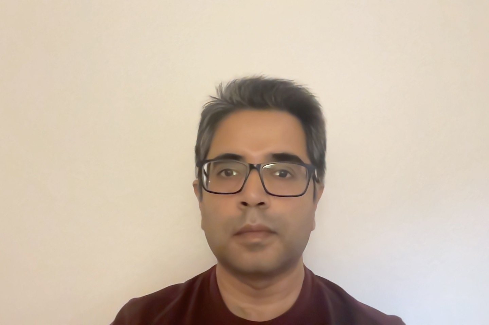

Anirvan Duttagupta

Profile
I am a software architect with 18+ years of experience designing and delivering
scalable, highly available, fault-tolerant distributed systems and
enterprise-grade infrastructure software. My work spans distributed filesystems,
storage platforms, backup/recovery services, ETL pipelines, and data access frameworks
— solutions that power mission-critical workloads for some of the world’s largest
organizations.
I specialize in:
- Turning complex distributed systems problems into robust, performant, maintainable solutions.
- Designing from first principles and rapidly iterating based on real-world feedback.
- Leading projects from concept through delivery, often on high-visibility, high-impact projects.
- Mentoring engineers across all career stages to help them thrive in R&D organizations.
With a dozen issued or filed patents in distributed computing as well as academic publications in network algorithms, I’ve built a
track record for innovation at scale — from architecting systems that process 10s of PBs of data daily, to frameworks
that broaden development access from a handful of experts to entire organizations.
Technical Skills
- Distributed Systems & Storage: Cloud-native design, microservices, HA/DR architectures, filesystems, object/block/NAS storage.
- Programming: C++, Go, Python, Shell scripting, Protocol Buffers.
- Data & APIs: SQL, Cypher, ElasticSearch, MongoDB, gRPC, REST, GraphQL.
- Cloud & Virtualization: AWS, VMware, container orchestration (Docker, Kubernetes).
- Debugging & Performance: Advanced multi-threaded debugging, profiling, race condition resolution.
Professional Experience
Distinguished Engineer / Lead Architect | Cohesity | Oct 2025 – Present
Leading a team of architects specializing in the data protection line of business.
Principal Engineer / Architect | Cohesity | Jan 2023 – Sep 2025
- Lead architect for high-scale SaaS data protection and analytics platforms.
- Designed data-protection for SaaS and PaaS workloads, introducing novel storage abstractions on top of Cohesity’s web-scale filesystem.
- Created a company-wide data access layer enabling multiple applications (security scans, conversational search, indexing) to work seamlessly across workloads.
- Built a multi-language adapter framework that expanded developer participation from dozens to hundreds across the company.
- Overhauled ETL pipelines for improved data quality, scalability, and real-time reporting.
Technical Director | Cohesity | 2019 – 2022
- Architected and led development of next-gen distributed backup/recovery systems and orchestration frameworks.
- Scaled backup platform capacity 10× while improving reliability.
- Designed distributed schedulers and resource managers to optimize performance and fairness at scale.
- Championed adoption of modern APIs (e.g. gRPC) and microservices, improving integration performance across the product line.
Staff-II Engineer | Cohesity | 2017 – 2019
- Delivered Cohesity’s internal distributed MapReduce platform for large-scale filesystem maintenance and analytics.
- Co-developed the company’s application orchestration and marketplace platform.
Member of Technical Staff | Cohesity | 2014 – 2017
- Built core replication services for disaster recovery and cross-site synchronization.
- Owned and improved critical distributed components, resolving escalations that preserved major customer accounts.
Member of Technical Staff / Engineering Manager | Riverbed Technology | 2007 – 2014
- Contributed to the design of hyperconverged storage appliances for remote/branch offices.
- Developed proprietary storage acceleration and infrastructure tooling.
Earlier Roles
HP (via NucleoDyne), Neoscale Systems, Alumnus Software, Cognizant Technology Solutions — focused on
low-level storage systems, device drivers, and enterprise applications.
Publications and Patents
~12 patents issued/filed in distributed computing, storage, and backup/recovery systems.
Publications in Springer LNCS on wireless sensor network coverage optimization.
Education
M.S., Computer Science & Engineering, IIT Kharagpur, India
B.E., Computer Science & Technology, IIEST (formerly Bengal Engineering College), India